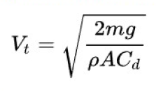
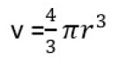
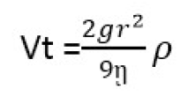
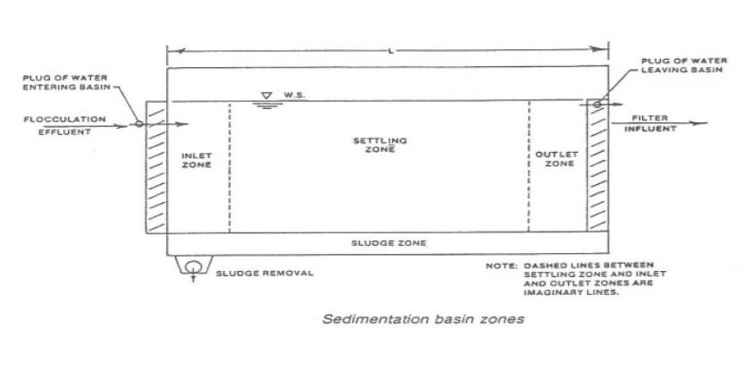

Settling Experiment
Aim of Experiment
To study the characteristics of calcium carbonate slurry and to determine its free
settling velocity.
Apparatus and Materials Required
- Settling apparatus (Glass Jar)
- Mesh
- Beaker
- Stirring Rod
- Powder of Calcium Carbonate
- Spatula
- Stopwatch
Theory of Experiment
Sedimentation is simply the process of letting suspended material settle by gravity.It is accomplished by decreasing the velocity of the water being treated to a point below which the particles will no longer remain in suspension. The rate at which suspended solids subside and are deposited is known as free settling velocity.
Free settling takes place when individual particles fall freely in a fluid medium without being touched or hindered by other particles and with the fluid being still.
Free Settling :- Falling of a particle is not affected by other particles and wall container/column.
Hindered Settling :- Particles settling at low falling rate due to the high solid concentration.
Terminal Velocity :- It is the maximum velocity attainable by an object as it falls through a fluid. It occurs when the sum of the drag force (Fd) and the buoyancy is equal to the downward force of gravity (FG) acting on the object. Since the net force on the object is zero, the object has zero acceleration.
Using mathematical terms, terminal speed - without considering bouyancy effects is - given by: where,
- Vt represents terminal velocity
- m is the mass of falling object
- g is the accelaration due to gravity
- Cd is drag coefficient
- p is the density of the fluid through which object is falling and
- A is the projected area of the object
Stokes law “If drag force is directly proportional to velocity is called stokes law”.
FD ∝ V
The drag force F on a sphere of radius r moving slowly with speed v through a fluid of viscosity η is given by stokes law as under:F = 6πηrV
At high speeds the force is no longer simply proportional to speed.Stokes law derivation :- Consider a water droplet such as that of fog falling vertically,the air drag on the water droplet increases with speed. The droplet accelerates rapidly under the over powering force of gravity which pulls the droplet downward. However, the upward drag force on it increases as the speed of the droplet increases. The net force of the droplet is:
Net force = Weight – Drag force ………………(1)
As the speed of the droplet continues to increase,the drag force eventually approaches the weight in the magnitude.To the find the terminal velocity v 1 in this case, we use Stokes Law for the drag force. Equating it to the weight of the drop, we have:From equation (1):
F = mg – FD
F =mg – 6 πηrVt
ma =mg – 6 πηrVt
If m=0 then:
mg = 6 πηrVt
Vt = mg/ 6 πηr ………….(2)
By substituting the mass of the droplet ρV and volume  in equation (2) we get: 
SedimentationBasin Zones
Most sedimentation tanks are divided into these separate zones :
- Inlet Zone :- The inlet or influent zone should distribute flow uniformly across the inlet to the tank. The normal design includes baffles that gently spread the flow across the total inlet of the tank and prevent short circuiting in the tank. (Short circuiting is the term used for a situation in which part of the influent water exits the tank too quickly, by flowing across the top or along the bottom of the tank.) The baffle is sometimes designed as a wall across the inlet, with holes perforated across the width of the tank.
- Settling Zone :- The settling zone is the largest portion of the sedimentation basin. This zone provides the calm area necessary for the suspended particles to settle.
- Sludge Zone :- The sludge zone, located at the bottom of the tank, provides a storage area for the sludge before it is removed for additional treatment or disposal. Basin inlets should be designed to minimize high flow velocities near the bottom of the tank. If high flow velocities are allowed to enter the sludge zone, the sludge could be swept up and out of the tank. Sludge is removed for further treatment from the sludge zone by scraper or vacuum devices which move along the bottom.
- Outlet Zone :- The basin outlet zone (or launder) should provide a smooth transition from the sedimentation zone to the outlet from the tank. This area of the tank also controls the depth of water in the basin. Weirs set at the end of the tank control the overflow rate and prevent the solids from rising to the weirs and leaving the tank before they settle out. The tank needs enough weir length to control the overflow rate, which should not exceed 20,000 gallons per day per foot of weir. 
Procedure
The calcium carbonate is first sieved in order to achieve uniform particle size using a mesh . The calcium carbonate is then mixed with water in 5 different concentration level in 2%,4%,6%,8% and 10% by weight . Each of the slurry is then placed in the sedimentation tubes at the same height. The readings were noted at different time intervals until all calcium carbonate are completely settled down.The slurries were then left for 2 hours to record the final compaction readings.
Part A : For 5% Calcium Carbonate
| Time (min) | Interphase Height (mm) | Settling Velocity (mm/min) | Slurry Concentration (Kg/L) |
|---|---|---|---|
Part B : For 10% Calcium Carbonate
| Time (min) | Interphase Height (mm) | Settling Velocity (mm/min) | Slurry Concentration (Kg/L) |
|---|---|---|---|